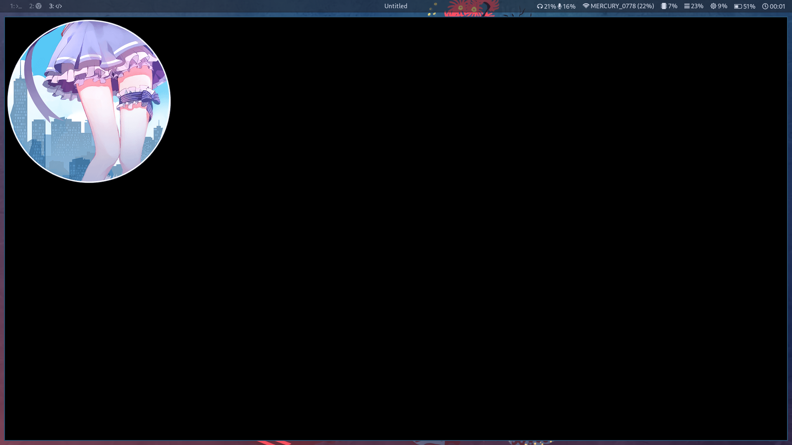

Lisp 游戏开发入门 (Fennel && Love2d)
Table of Contents
TL;DR
1. Love2d是什么
LÖVE (or Love2D) is an open-source cross-platform engine for developing 2D video games. The engine is written in C++ and uses Lua as its scripting language. It is published under the zlib license.
与其说是游戏引擎 我觉得它更像一个框架 由于Love2d非常小巧(AppImage仅有不到5MB) 与其它游戏引擎相比它缺少很多东西。但是麻雀虽小五脏俱全，基本功能都有，并且有大量插件可以使用。
2. Fennel是什么
Fennel is a lisp that compiles to Lua. It aims to be easy to use, expressive, and has almost zero overhead compared to handwritten Lua.
3. 为什么要写这篇文章
因为有关Fennel的文章非常少，有关Fennel+Love2d组合的文章更是几乎没有，Fennel教程也有点不堪入目。所以我在此记录一些小技巧与坑。寻找有趣的人
4. 为什么选用Fennel与Love2d
为什么使用Fennel？理由如它的 README 所说的一样，并且有趣。
为什么使用Love2d？曾几何时 看着其它游戏引擎的教程 首先都是教你引擎UI的这个按钮是干什么的 那个按钮是干什么的 节点怎么添加 应该用鼠标点这点那 然后还要熟悉一堆引擎自身的概念，搞的我云里雾里。
对我来说Love2d最大的优点就是不需要再去强迫自己学习太多新东西。Love2d推荐使用其它非常优秀的工具如Aseprite Tiled等组合成你的“IDE” 并且随时都可以拿出来写写 不管是电脑还是手机 只要安装了Love2d，随意打开一个编辑器即可开始开发。
开发环境设置
目录结构
├── lib │ ├── fennel │ └── fennel.lua ├── main.lua ├── Makefile └── wrap.fnl
lib 目录用来存放fennel和一些插件
main.lua love2d会优先读取这个文件，其它作用后面会说到
-- Bootstrap the compiler
fennel = require("lib.fennel")
table.insert(package.loaders, fennel.make_searcher({correlate=true}))
-- Require our Fennel source file
require("wrap")
Makefile 方便编译打包之类的 暂时先写个最小的
LOVE_VERSION=11.3 FENNEL_VERSION=0.7.0 AUTHOR="keke" LIBS := $(wildcard lib/*) LUA := $(wildcard *.lua) SRC := $(wildcard *.fnl) OUT := $(patsubst %.fnl,%.lua,$(SRC)) run: $(OUT) ; love . count: ; cloc *.fnl --force-lang=clojure clean: ; rm -rf $(OUT) cleansrc: ; rm -rf $(OUT) %.lua: %.fnl; lua lib/fennel --compile --correlate $< > $@
wrap.fnl 我们写的代码
Hello World!
我们在 wrap.fnl 中写入
(fn love.draw [] (love.graphics.print "Hello World!"))
运行make如果弹出一个窗口 左上角显示Hello World,那么你的开发环境就完全没问题啦
显示图片
love2d有一套自己的回调函数，主要由load，update和draw构成，游戏的主循环将发生在这之间。
游戏主循环-更新游戏的逻辑，绘制游戏的图像，在程序实现中是一个循环体，程序通过不断地执行这些操作来支持游戏的正常运行。
(fn love.load []) ;;资源加载回调函数，仅初始化时调用一次 (fn love.update [dt]) ;;更新回调函数，每周期调用 (fn love.draw []) ;;绘图回调函数，每周期调用 (fn love.keypressed [key]) ;;键盘检测回调函数，当键盘事件触发是调用 (fn love.mousepressed [x,y,key]) ;;回调函数释放鼠标按钮时触发
对应到Lua就是
function love.load() end function love.update(dt) end function love.draw() end function love.keypressed(key) end function love.mousepressed(x,y,key) end
这一章节我们将在Love2d中显示第一张图片，我们将图片放在项目目录下 命名为 1.png
首先，游戏中的资源，需要加载到内存中，存储在一个变量内，以便我们调用它。但资源通常只需要加载一遍，love2d中的load回调函数只会在运行过程中调用一次，所以我们在这里面编写我们的代码。
(fn love.load [] (global image (love.graphics.newImage "1.png"))) (fn love.update [dt]) (fn love.draw [] (love.graphics.draw image 0 0))
这可以成功运行并且无报错，虽然对应成lua是没有问题的， 但是 lisp中这样写是不对的! 方便入门先写成这样 对应的lua代码
function love.load()
image = love.graphics.newImage("1.png")
end
function love.update(dt)
end
function love.draw()
love.graphics.draw(image, 0, 0)
end
运行起来是这样的

在平常所学的数学坐标系中，一般直角坐标系原点在左下角，但是程序中，我们规定屏幕的左上角为坐标的原点，也就是x=0，y=0。所以我们的图片会显示到左上角。
让图片移动
现在，我们可以尝试一下调用update回调函数，在屏幕上移动我们的图片。
(local image (love.graphics.newImage "1.png")) (var (x y) 0) (fn love.load []) (fn love.update [dt] (set x (+ x 100))) (fn love.draw [] (love.graphics.draw image x y))
运行后我们可以看到图片一下从屏幕上闪过去，这是因为运行的速率在默认情况下是每秒60次，也就是说，图片之所以一瞬间就移出了屏幕，是因为图片移动得太快了，一秒钟的时间就移动了6000像素，6000px/s
100（我们设置的移动速度）x60（更新速度）=6000（像素）
dt 参数所代表的是每帧的间隔，我们需要在我们的速度上乘上该时间，也就是每秒100像素，100px/s
我们把它改成 (set x (+ x 1)) 试试，即每秒移动6像素，现在看起来是这样的
我们可以通过在 love.load 中加入 (love.window.setMode 500 500) 来改变窗口大小， (love.window.setTitle "hello title") 来改变标题
PS
在Fennel中，我们可以通过
fn创建一个lambda函数(也被成为闭包), 通过let local var来设置局部变量，通过global来设置全局变量，通过fn来设置函数，通过var可以更改本地的值，lisp中使用前缀表达式(波兰式) 例如前缀表达式+ 1 1等同于中缀表达式1+1
TODO 序列帧动画
TODO 使用键盘与鼠标
TODO 碰撞检测
TODO 瓷砖地图
TODO 骨骼运动
TODO 编写多人游戏
TODO 其它
TODO 跟着例子学Fennel
斐波那契序列
(fn fib [n] (if (< n 2) n (+ (fib (- n 1)) (fib (- n 2)))))